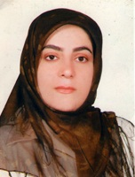
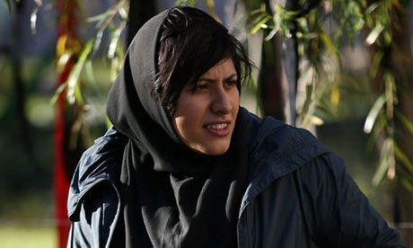
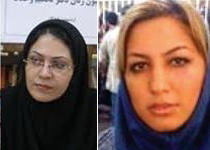
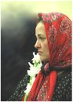
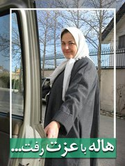
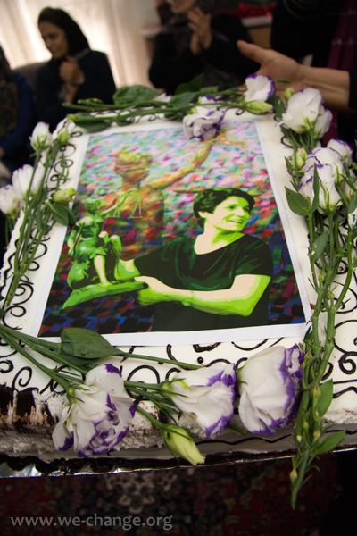
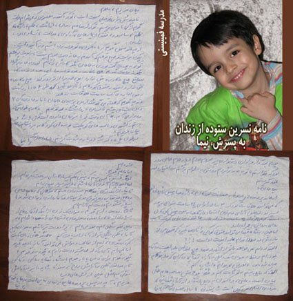
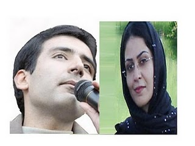
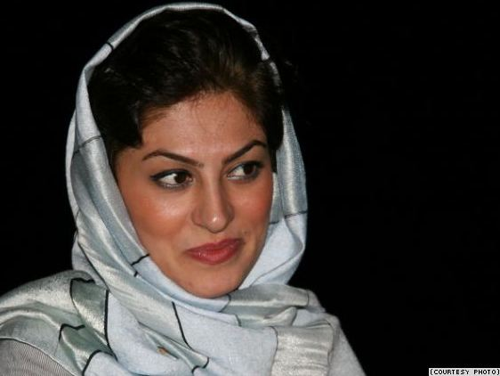

Shirin Ebadi and Four Human Rights Organizations Issue Statement
Statement of 750 Women and Democracy Activists on the Tragic Death of Haleh Sahabi





0 | 30 | 60 | 90 | 120 | 150 | 180 | 210 | 240 | ... | 420
0 | ... | 15 | 20 | 25 | 30 | 35 | 40 | 45 | 50 | 55 | ... | 80